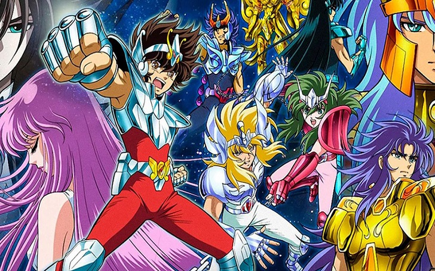
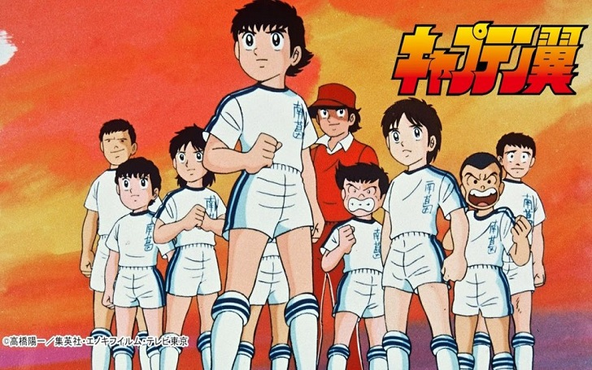
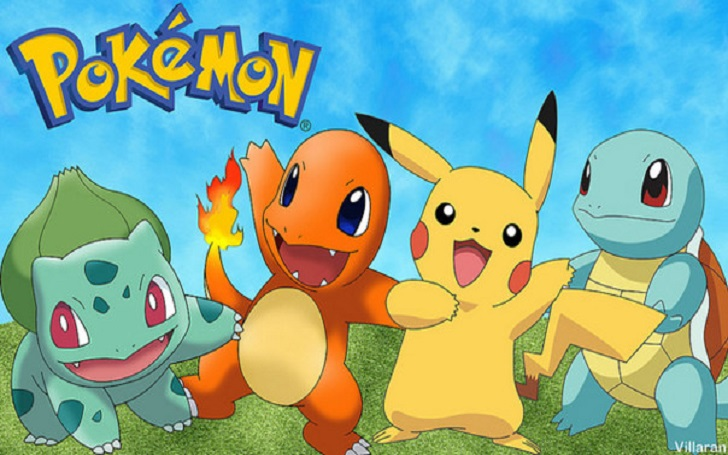
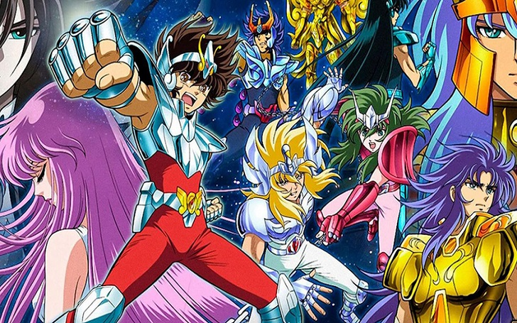
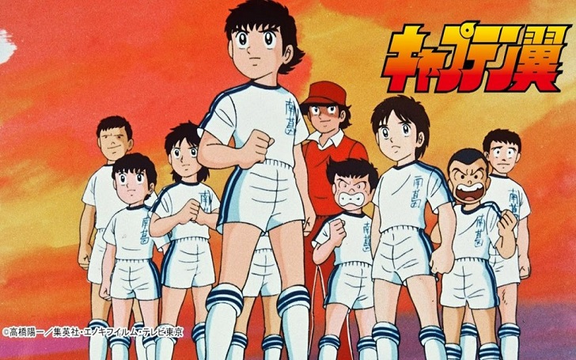
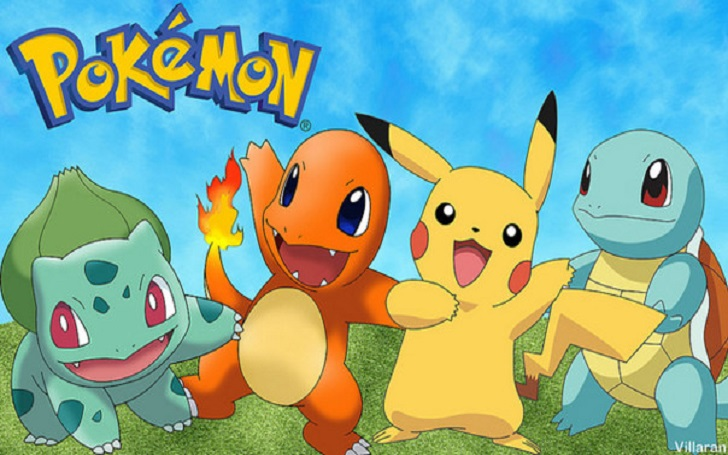

Dragon Ball Z regresa a la televisión
‘Dragon Ball Z’ en Comedy Central puede verse de lunes a viernes a partir de las 18:50 horas, con una primera emisión con cuatro episodios. Y aquellos que no puedan ver los episodios entre semana es más que probable que puedan hacerlo los fines de semana, tal y como ha hecho el canal tradicionalmente con otras reemisiones. Una oportunidad única de disfrutar de ‘Dragon Ball Z’ con la máxima calidad a la espera de que Toei retome el anime de ‘Dragon Ball Super’, ahora paralizado hasta nuevo aviso; y es que el manga va mucho más avanzado, con el anime detenido al final del Torneo de Poder.
Digimon Adventure 02
Han pasado tres años desde la gran aventura de Taichi y sus amigos en el Mundo Digital, pero ahora un nuevo enemigo que se hace llamar Digimon Kaiser aparece en él. Los poderes del Digimon Kaiser evitan que Agumon y el resto de Digimon evolucionen, lo que los pone en grandes apuros. En esta situación desesperada aparece un nuevo héroe, ¡V-mon! V-mon tiene la habilidad de combinarse con los Digimental para evolucionar a nuevos tipos de Digimon nunca antes vistos. Su compañero será Daisuke Motomiya, un compañero menor del equipo de fútbol de Taichi que llega al Mundo Digital por sorpresa.
Saint Seiya: personajes de Caballeros del Zodíaco y sus signos
Es bien sabido que Saint Seiya o Caballeros del Zodíaco es uno de los anime más antiguos, y a su vez, una de las series de anime más vistas que existen. Esta serie de anime basada en el manga homónimo de Masami Kurumada marcó la infancia de millones de personas alrededor del mundo. Este anime es muy aclamado y adorado por las personas que crecieron viendo a sus Santos o Caballeros favoritos hacer uso de sus ataques y técnicas características para luchar valientemente contra los diversos enemigos y amenazas que pudiesen presentarse a lo largo de la cronología de la serie.
Super Campeones se va de Netflix
De acuerdo a lo informado por la plataforma en su sitio web, el animé Super Campeones dejará de estar disponible en Netflix el 11 de abril. Por lo tanto, si nunca has visto este programa que marcó la infancia de millones, tienes unas semanas para ver sus 52 episodios disponibles, hasta que sera retirado hasta nuevo aviso. Ya te contamos que el 11 de abril será el último día que el show deportivo esté en Netflix, pero no te preocupes, ya que existen más espacios en los que lo puedes encontrar. Puedes ver Super Campeones también en la plataforma Amazon Prime Video y en el hogar de las producciones de animé: Crunchyroll.